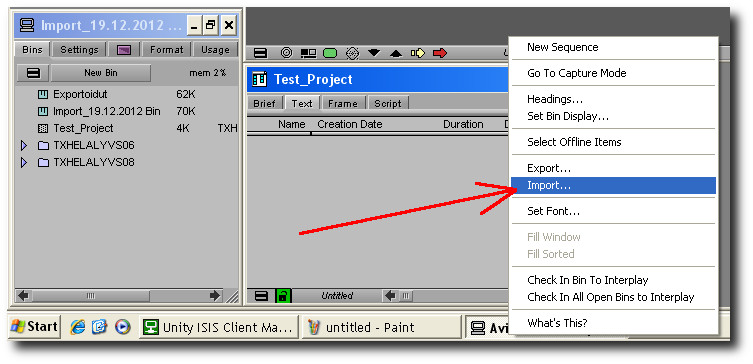
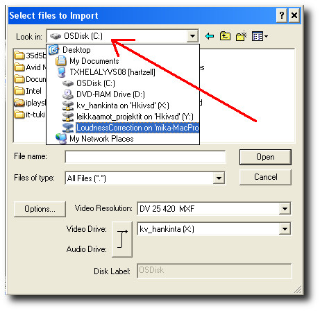
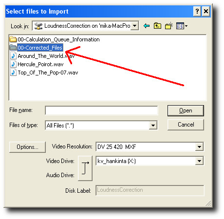
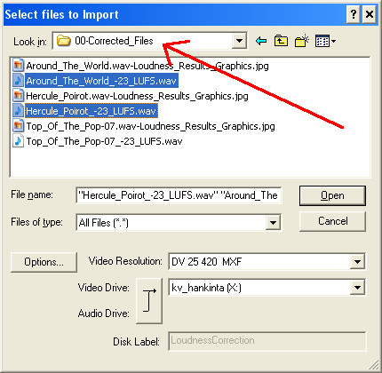

Importing loudness corrected files to Avid Media Composer
LoudnessCorrection server disk must be already be mounted, see
for instructions here.
Click on an empty spot on a bin window with right mouse button and choose "Import"
from the menu that appears.

Next click on the disk name shown on top of the window and choose "LoudnessCorrection"
from the list.

Now files on the server HotFolder are shown. Files in this directory are not
loudness corrected. The see corrected files navigate to folder "00-Corrected_Files"
by double clicking on it.

Now keep ctrl - button pressed and choose all files that
you want to import to Media Composer. Note that names of loudness corrected
audio files always end with "-23LUFS". When you click on
the "Open" - button, Avid imports selected files to the
bin.
